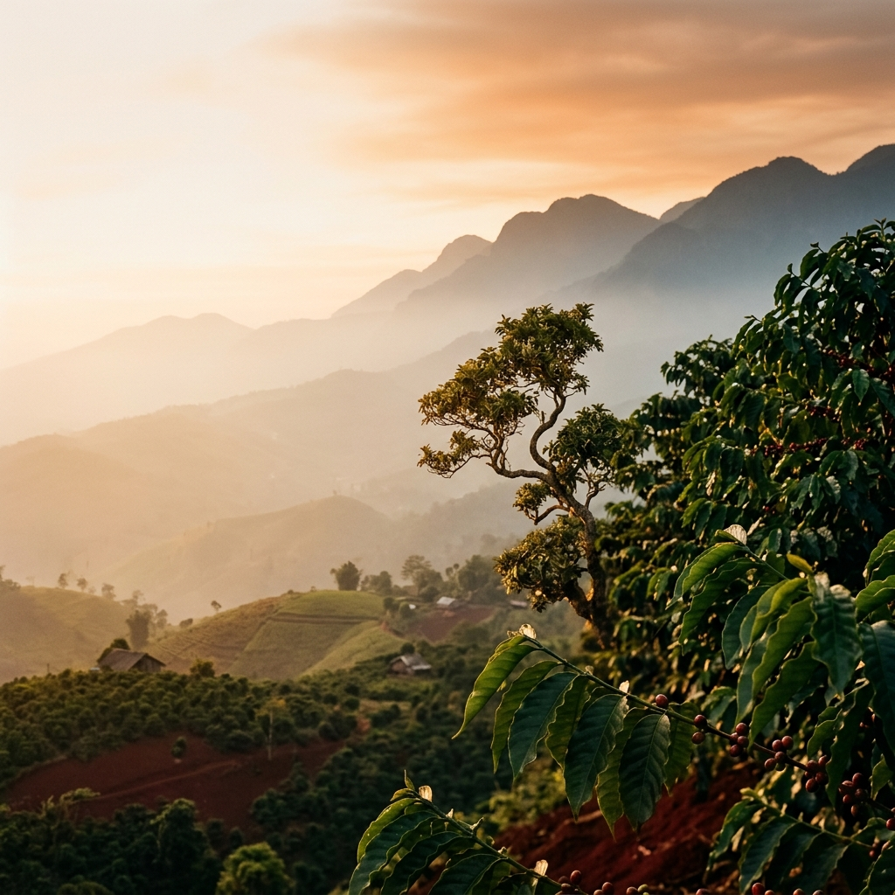
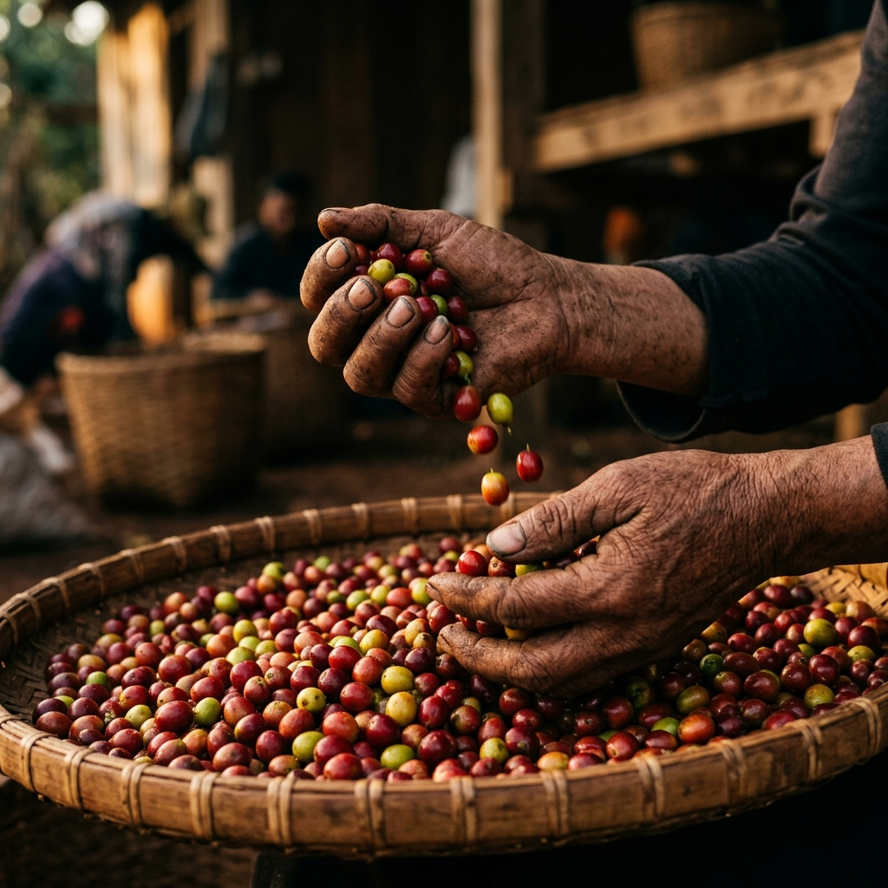
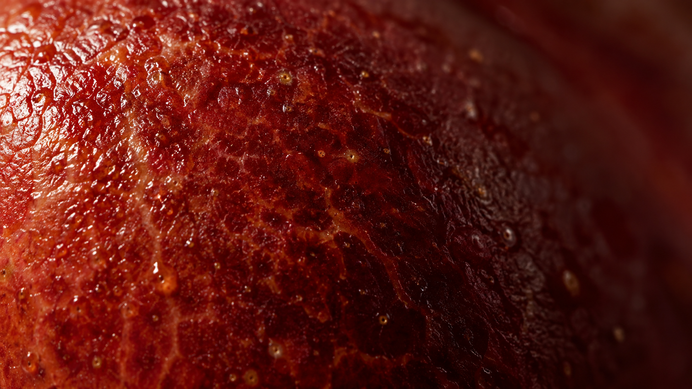
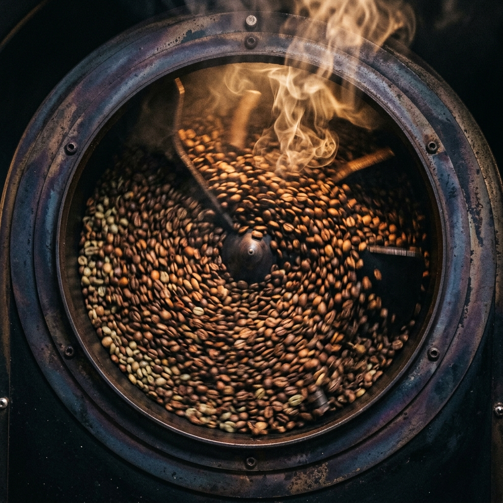
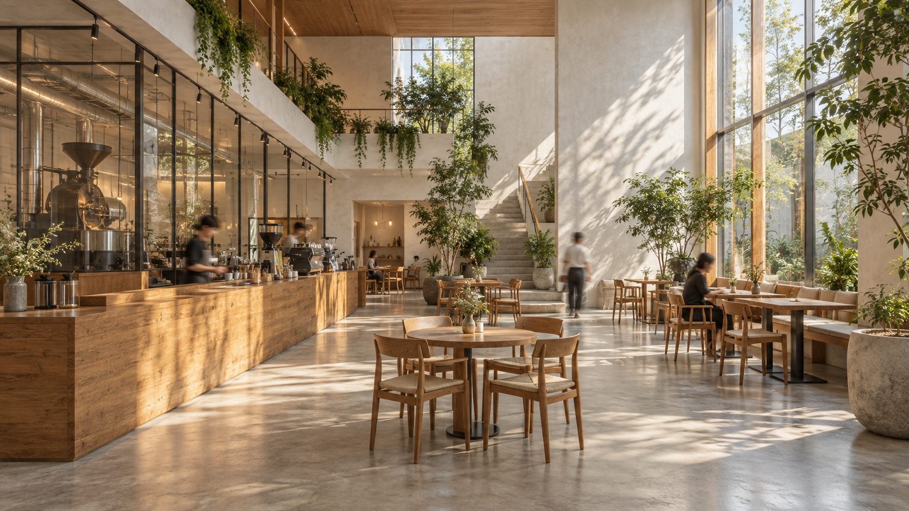
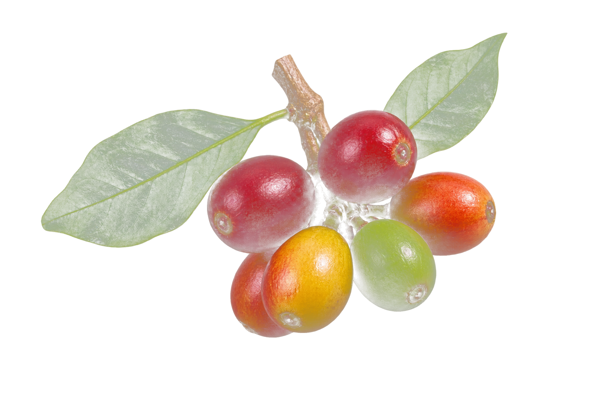
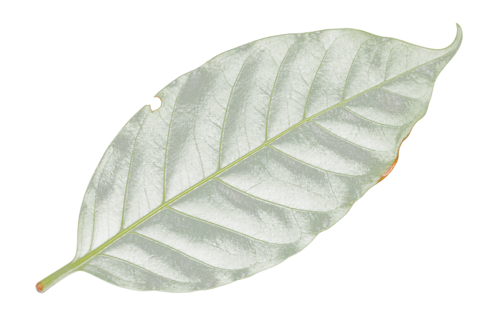
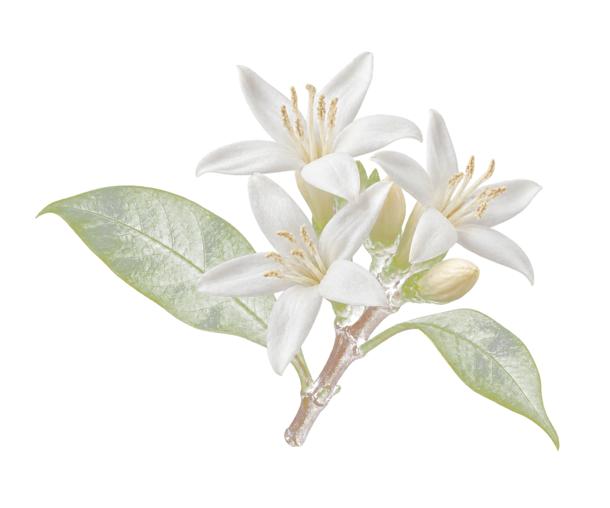
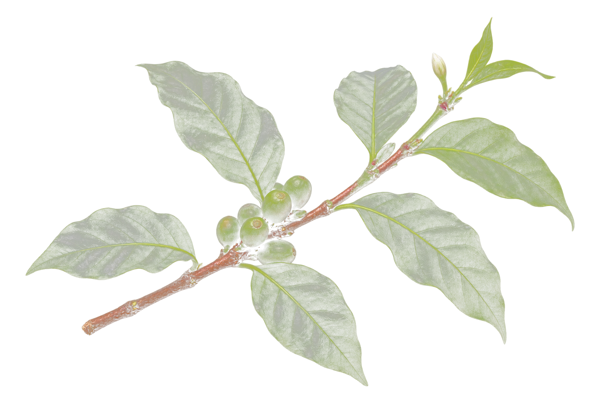
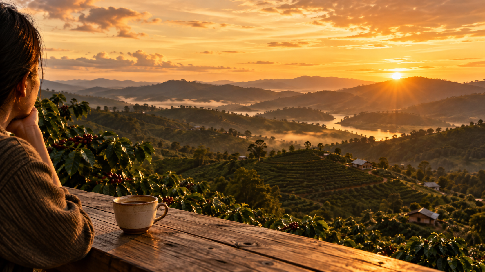

EVERY HALF — SPECIALTY COFFEE IN HO CHI MINH CITY
Cà phê đặc sản giữa lòng TP.HCM.
Khám phá cà phê đặc sản Việt Nam tại Every Half Coffee Roasters và tìm cửa hàng phù hợp cho lần ghé tiếp theo.
30 cửa hàng tại TP.HCM · Xem giờ mở cửa · Outdoor · Pet-friendly
- 30Cửa hàng tại TP.HCMDễ dàng tìm một Every Half gần bạn
- Specialty CoffeeCà phê Việt Nam được tuyển chọn
- RoasteryTừ hạt xanh đến tách cà phê tại Every Half
01 / Nguồn gốc
Đất đỏ, bàn tay và sự kiên nhẫn.
Hạt cà phê bắt đầu từ những điều rất thật: đất, thời tiết và nhịp chăm sóc của con người. Câu chuyện này tôn trọng phần còn lại của tự nhiên.



02 / Chuyển hoá
Nhiệt đánh thức những tầng hương.
Rang không chỉ là kỹ thuật. Đó là một cách lắng nghe, để từng hạt kể lại nơi nó đã đi qua bằng vị giác riêng.

03 / Không gian
Một nơi để nhịp sống chậm lại.
Nông hộ & tự nhiên
Điều nhỏ bé vẫn tiếp tục lớn lên.





Ghé thăm Every Half
Lần ghé tiếp theo bắt đầu từ đây.
Chọn một góc yên tĩnh, một tách cà phê hợp gu và dành cho mình một nhịp chậm giữa ngày.